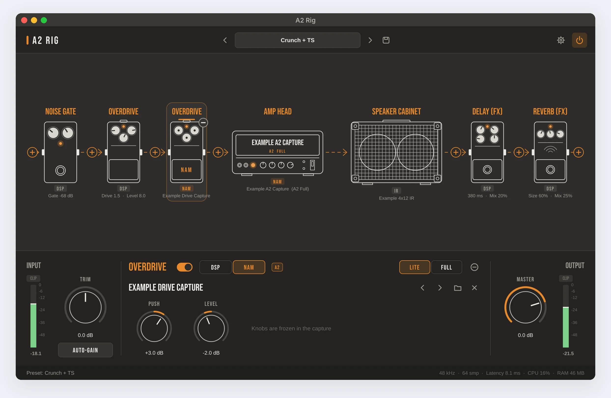
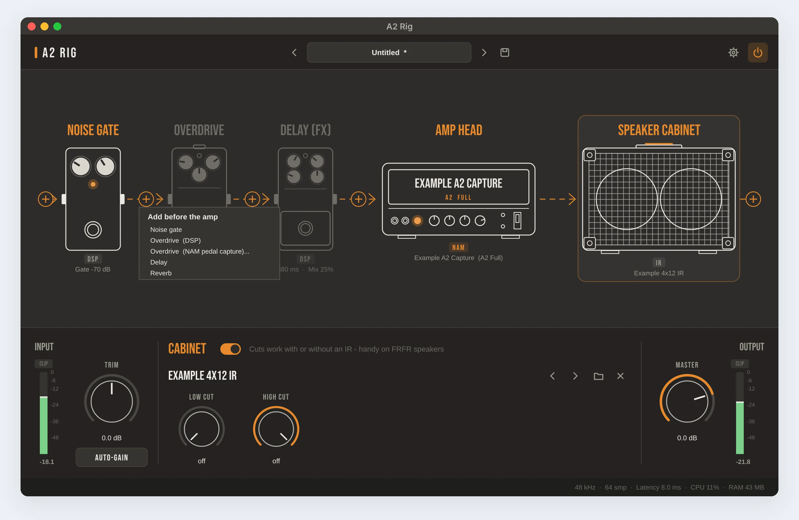
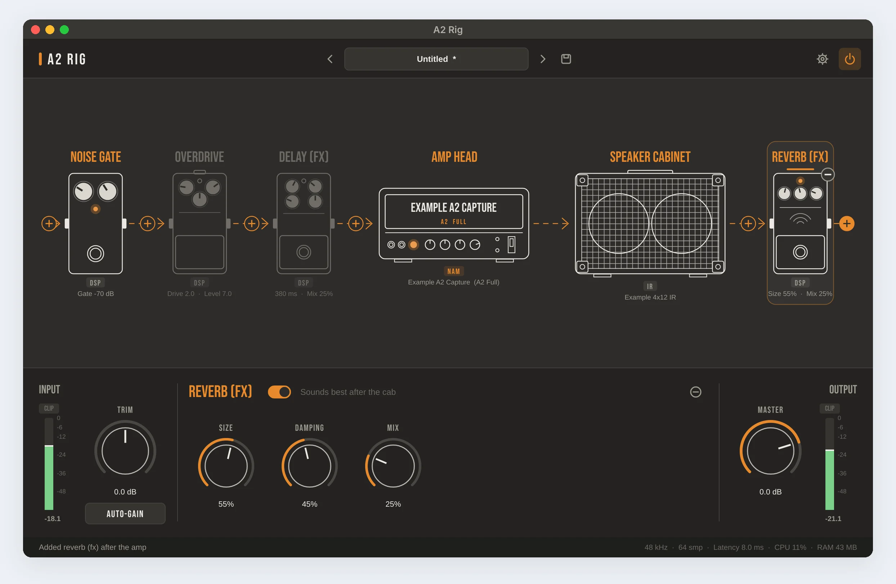
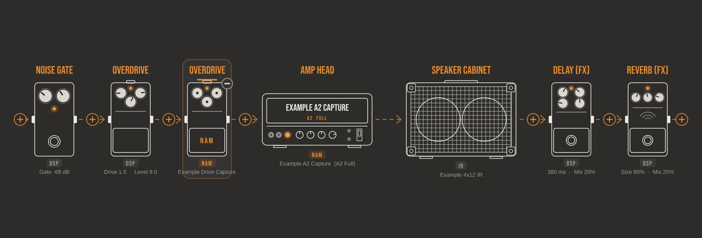
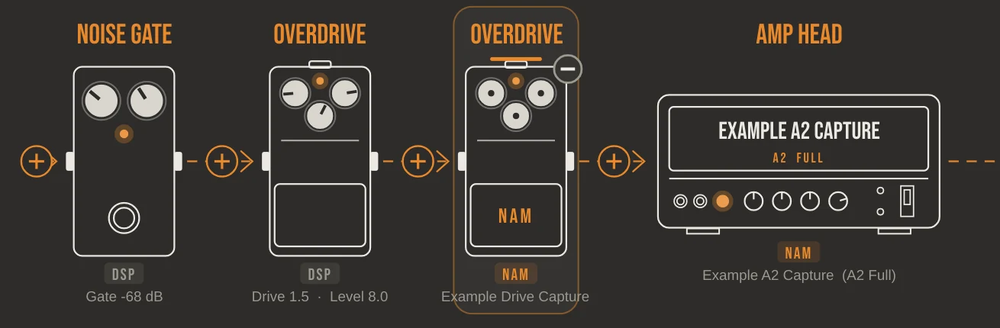
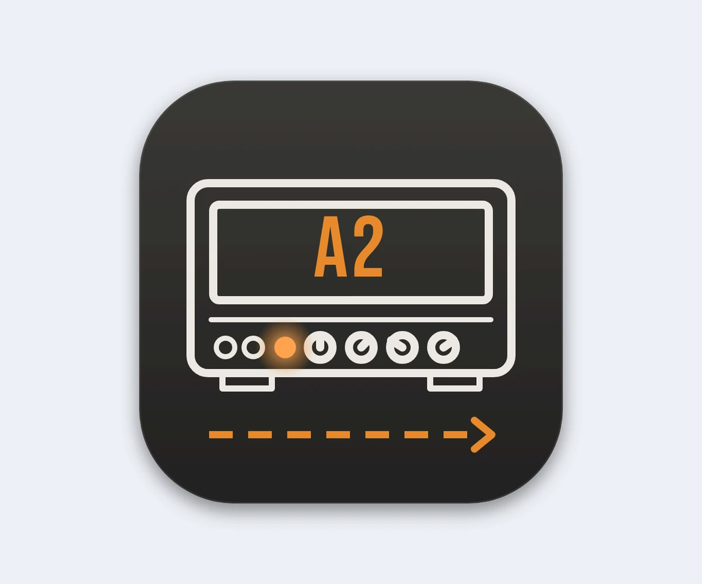
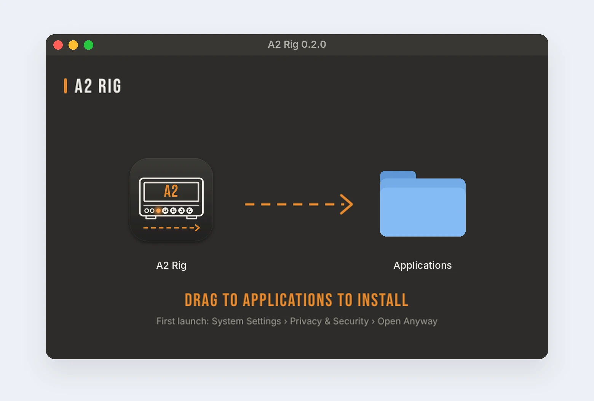
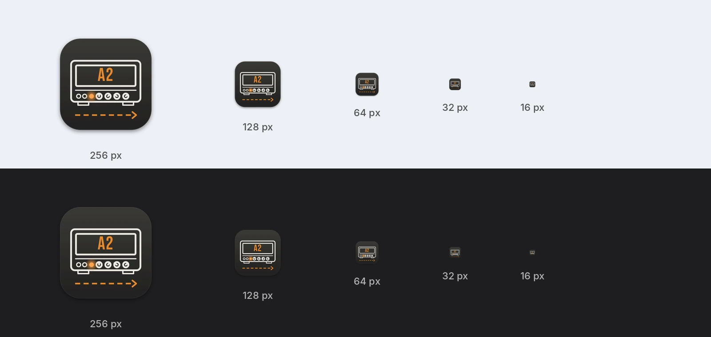

A2 Rig (Personal App)
A lightweight Mac app I designed for my own guitar practice. It plays Neural Amp Modeler (NAM) A2 captures without a DAW, and its main screen is the signal chain itself: pedals, amp head and cabinet, drawn as line art, which I can rebuild in place while I play.
Tasks
- Problem framing
- Interaction design
- Direct manipulation
- UI design and design tokens
- Metering and feedback design
- Microcopy
- App icon and installer
- Performance budget
- Prototyping in code
Personal tool · built for my own use

Overview
NAM is an open-source way to capture a real amp with machine learning and play it on a computer. Its newer A2 captures are lighter and can run in two qualities, Full and Lite. To play them, though, I had to open a recording program, make a track, arm the input, insert a plugin and load the capture and a cabinet file. Every single time.
So I designed my own player. One window, opened straight into playing, built around how I already think about a guitar rig: a chain of pedals into an amp and a cabinet. It took three rounds. The third came entirely from my own use of the app: the questions I asked while playing it became its best features.
The design is mine from start to finish: the brief, the interaction model, the visual direction and every decision between the builds.
A real, working app for my own use. The screenshots below are from the running app.
DAWs to open
Launch, and the last sound and audio settings are already there.
to add a pedal
A “+” on every arrow of the chain; up to 10 pedals, before or after the amp.
the whole app
About 1.7% CPU for an A2-Lite capture, 8% for A2-Full, on one core.
The problem
Practice time is short. Every step between picking up the guitar and hearing a good sound is a reason not to play.
Too many steps
A DAW, a track, an armed input, a plugin, a capture and a cab IR, before the first note.
Levels are guesswork
Captures expect a certain input level. Hot active pickups can push the input too hard without you noticing.
Latency is invisible
You feel a late note before you can find the setting that causes it.
Panels, not a rig
Plugin windows show rows of knobs. I think in pedals, an amp and a cab, in that order.
I want to pick up the guitar and play an A2 capture within seconds, at the right level, with the lowest latency my interface allows, and without opening a DAW.
How might we…
- make the app open straight into playing, with everything as I left it?
- show the whole signal path at a glance, and change any part of it where it is?
- set the input level correctly without knowing anything about gain staging?
- make latency and clipping visible without making the screen noisy?
- keep the app so light that it never competes with the sound for CPU?
Designing for one user: me
Designing for yourself is easy to do badly: you skip the brief because you think you know it. So I wrote down my setup and my needs first, and judged every build against them.
My setup
- Mac mini M1, SSL 2 MK2 audio interface.
- A six-string with active pickups: a hot, loud signal.
- Practice at home, short sessions, often late.
- A folder of amp captures, pedal captures and cabinet IRs to switch between.
What I need from it
- Open and play, with no setup on the second launch.
- Change the rig with my hands still on the guitar.
- Know my levels are right and my latency is low.
- Nothing running that I am not using.
Process: three builds, two reviews
1 · First build
A working player with a classic panel: input, gate, EQ, output, cab IR and presets.
2 · Review
Extremely lightweight, the chain drawn like my reference images, levels you can see.
3 · Using it
Playing it every day, I asked what each part really did, and where it got in my way.
4 · Third build
An editable chain, pedal captures with honest controls, a label on every block, quiet metrics.
| First build | Second build | Why |
|---|---|---|
| A panel of knobs: input, gate, EQ, output | The signal chain drawn as pedals, amp head and cabinet; click a block to edit it | I think in pedals and amps, not parameter lists |
| Gate and EQ only | Overdrive and delay added as real effects | They were in my reference images, so they had to work |
| Full JUCE framework, 9.8 MB | Only the modules it needs, stripped binary, 8 MB; blocks that are off cost nothing | “Extremely lightweight” was a requirement, not a wish |
| No metering | Input and output meters with zones, peak hold and a CLIP light that stays on | You cannot set a level you cannot see |
| Manual input trim | AUTO-GAIN: play hard for 3 seconds and the trim is set for you | Hot pickups and captures that expect a set level |
Round three: my questions, my design
The third round did not start with a brief. It started with questions I asked while playing. Each one exposed a gap between what the screen said and what the sound did, and each answer became a design rule.
A “If a pedal is a capture, do its knobs mean anything?”

No. A NAM capture is a snapshot of a pedal at one setting, so its drive and tone are baked in. Showing working knobs for it would be a lie. I asked for every overdrive to switch between DSP, the built-in effect where every knob works, and NAM, a real pedal’s capture.
How the screen tells the truth: in NAM mode the drawing loses its knob pointers and gets a NAM plate on the footswitch. The panel keeps only the two controls that still mean something, Push (how hard you hit the pedal) and Level, and says why in one line: “Knobs are frozen in the capture”.
Principle: never show a control that does nothing. Signifiers have to match what the system can really do.
Only the overdrive gets a NAM mode. Delay and gate work over time, and a capture only remembers a few milliseconds of sound, so they stay DSP.
B A “+” on every arrow, a “−” on every pedal


My idea: the dashed arrows already show where the sound goes, so that is where a new pedal should go in. A “+” sits on every arrow and at both ends; clicking it opens a short menu titled with where the pedal will land, “Add before the amp” or “Add after the amp”. A “−” appears on a pedal when you point at it or select it, and the Delete key does the same.
- Direct manipulation: you change the chain where you see it, not in a separate routing screen.
- The chain grows and shrinks to fit the window, up to 10 pedals, so nothing ever scrolls out of sight.
- One general rule replaced a special case. The delay used to have a “Before amp / After cab” switch. Now any pedal goes anywhere, so the switch is gone.
- Safe while playing: a new pedal fades in and a removed one fades out, so there is never a click in the sound. The new pedal is selected, so its controls are already open.
C A name and a type under every block


With pedals coming and going, I wanted to know at a glance what was loaded. Under every block there is now a small tag, DSP, NAM or IR, and under it either the values (“380 ms · Mix 20%”) or the file’s name (“Example Drive Capture”). NAM tags are orange, so the captures stand out from the built-in effects.
Principle: recognition over recall. I should never have to click a block to remember what is in it.
D Metrics at the bottom: there, but quiet

I asked for CPU, memory and latency to be visible, but not in the way. They moved from the header to one quiet grey line at the bottom right: sample rate, buffer, latency, CPU, RAM. The line only changes colour when something is wrong: amber when latency goes over 10 ms, red when the CPU goes over 70%. The header is now just presets, settings and power.
Principle: the status of the system is always visible, and it only asks for attention when it needs it.
E “Can I go down to 32?”

The settings now list every buffer size the audio interface accepts, each with its time in milliseconds next to it: “32 samples (0.7 ms)”. A guitarist feels milliseconds, not samples, so the trade-off between speed and stability is shown in the unit that matters. 64 stays the default; the note below tells you to go back up if you hear crackles.
Design principles
The chain is the interface
One picture shows what is on, in what order, with which settings. You read it, and you rebuild it, in the same place.
No control without a meaning
Frozen knobs lose their pointers; switches that a general rule can replace are removed.
Show levels, don’t guess
Meters, a clip light that waits for you, auto-gain and level-matching between captures.
Quiet until it matters
Metrics sit in grey at the bottom and only take colour when something is wrong.
Off costs nothing
Anything switched off, or left flat, is skipped by the audio engine. Lightweight is a feature.
Say what to do next
Every message names what happened, or the problem and the fix.
One window, four layers
No tabs and no pages. Everything sits in one window, from the general at the top to the specific at the bottom.
Presets (previous, name, next, save), settings and the power switch. Nothing else.
The chain, left to right, in the order the sound travels, with a “+” on every arrow. The selected block is outlined.
Input meter and trim on the left, the selected block’s controls in the middle, master and output meter on the right.
The last thing that happened on the left; sample rate, buffer, latency, CPU and RAM on the right.
The chain tells the truth
The drawing is not decoration. It changes with the sound, so it can be trusted at a glance.


- An orange label means the block is on; dim grey lines mean it is off.
- The small knobs on each drawing turn with the real values; a capture’s frozen knobs have no pointers.
- The capture’s name is printed on the amp head, with its type and quality: “A2 · FULL”.
- Click a block to open its controls; click its footswitch to turn it on or off.
Colours, type and tokens
A dark stage for a dark room, white line art and one accent colour. Every value lives in a single file of design tokens, so the whole look can change from one place.
Surfaces and line art
Meter zones and warnings
Type
Noise gate · Overdrive · Amp head
DSP · NAM · IR · Trim · Auto-gain
Drive 2.0 · Level 7.0 · 380 ms · Mix 25%
- Bebas Neue for labels, tags and block names: condensed capitals, like the printing on real gear. Embedded in the app (SIL Open Font License).
- The system font at 13 px for values, names and messages.
- Geometry: 10 and 6 px corners, a 16 px spacing unit, a 54 px header, a 236 px deck and a 28 px status bar.
- Selection is never colour alone: the selected block gets an outline and an underline as well.
| Text colour on the stage | Contrast | Used for |
|---|---|---|
| Text #EFEDE8 | 11.9 : 1 (passes AA) | Capture name, values |
| Accent #E8892B | 5.3 : 1 (passes AA) | Labels of blocks that are on, NAM tags |
| Muted #9D998F | 4.9 : 1 (passes AA) | Secondary labels, status messages |
| Faint #6C6963 | 2.5 to 2.9 : 1 (fails) | Metrics line, meter scale. Next build: #98948C, 4.6 : 1 |
More screens
Screenshots from the running app, with a recorded guitar signal playing through it.
01 Full-rig capture with effects after it

Many captures already include the cabinet. Without an IR the drawing stacks the head on the cab and says so: “full rig, no IR”. Delay and reverb can still sit after it, where they sound cleanest.
02 Noise gate: see it working

A gate you cannot see is a gate you cannot set. An LED next to the switch reads OPEN or CLOSED, live, so the threshold can be set by watching it while the strings ring out.
03 Overdrive in DSP mode

The overdrive with its built-in effect: all three knobs work. One line of advice sits next to the switch, “Low drive + high level = tight boost”, the most common way to use it with metal captures, and the defaults start there.
04 Auto-gain: the level, set for you

Press AUTO-GAIN and play hard for three seconds. The app measures the strongest pick attacks, ignores single spikes, and sets the trim so they reach about −6 dBFS, the hot but clean signal most captures expect. Then it says exactly what it did. The trim stays a normal knob afterwards.
05 Clipping: a light that waits for you

A clip lasts milliseconds, and you are looking at the fretboard when it happens. So the CLIP light stays on until you click the meter. It also lights when the interface itself clips, before the app touches the signal.
06 Empty state: one clear next step

On first launch the amp head itself says “Load a capture”, and the status bar adds that a file can be dropped anywhere in the window. Captures, IRs and presets can all be dropped the same way.
07 Bypass: the dry signal, on purpose

Press B, or the power switch, and the whole drawing dims at once. The status bar confirms it, so a silent or dry guitar is never a mystery.
Screenshots were made on a test machine with a virtual audio device; the latency and CPU readouts in them come from that machine, not from my Mac.
Icon and installer
The first and last things you see of an app are its icon and its installer. Both use the same line art, orange accent and dashed signal arrow as the chain, so the app looks like itself before it even opens.


Key choice: the installer answers the next question before it is asked. The app is not signed with an Apple developer certificate, so macOS blocks the first launch. Instead of leaving that to a search engine, the window says it in one line: “First launch: System Settings › Privacy & Security › Open Anyway”.

Tested at the sizes macOS really uses. From 64 px up it reads well. At 32 and 16 px, in Finder lists and menus, the lettering and the arrow disappear and only the amp’s outline is left; on a dark Dock the dark tile also loses its edge.
Next: a simplified small-size version with only the amp outline and the orange LED, and a slightly lighter tile edge for dark backgrounds.
Hands on the guitar
A pick in one hand and the neck in the other leaves one finger free. Everything I do while playing is a single key.
| Key or gesture | What it does |
|---|---|
| 1 to 9 | Select a block, in chain order |
| Space | Turn the selected block on or off |
| Delete | Remove the selected pedal |
| ← → | Previous or next capture in the folder (or IR, when the cabinet is selected) |
| B | Bypass the whole rig |
| ⌘ S · ⌘ , | Save a preset · open settings |
| Click a “+” · a “−” | Add a pedal at that point in the chain · remove that pedal |
| Click a block · its footswitch | Open its controls · turn it on or off |
| Drop a file anywhere | Load a capture (.nam), an IR (.wav) or a preset (.a2rig); a .nam goes to the selected overdrive, otherwise to the amp |
| Click a meter | Reset its CLIP light |
Messages that say what happened
| Situation | What the status bar says |
|---|---|
| First launch | “Load a .nam capture to start - or drop one anywhere in this window” |
| A pedal added | “Added reverb (fx) after the amp” |
| The chain is full | “The chain is full (10 pedals) - remove one first” |
| No permission for the input | “No input access - allow it in System Settings > Privacy & Security > Microphone” |
| Auto-gain heard nothing | “Didn’t hear the guitar - check the input in Settings and the interface gain” |
| A preset’s files have moved | “Couldn’t find: …” with the file names, and the rest of the preset still loads |
| Switching quality | “A2-Lite: lowest CPU” · “A2-Full: maximum accuracy” |
Lightweight is a design decision
For a musician, a slow app is not a slow screen; it is a late note or a click in the sound. So I treated the CPU budget like any other requirement.
| What is running | CPU, one core |
|---|---|
| A2-Lite amp capture and gate | ~1.7% |
| A2-Full amp capture and gate | ~8% |
| A2-Full with gate, overdrive, delay and cab IR | ~9% |
| Each NAM pedal capture, in A2-Lite | about 2–4% more |
| The window, idle | ~0.5%, 26 MB of memory |
- Only the parts of the JUCE framework the app uses: no plugin hosting, no web view, no extra audio formats.
- Pedals that are off are skipped. An EQ left at 5/5/5 and cuts left off are skipped too.
- Pedal captures start in A2-Lite, the cheapest quality; Full is one click away.
- The chain is drawn once and cached; meters and metrics redraw only when their value changes.
Measured on one core of a test server at 48 kHz with a 64-sample buffer. An M1 Mac should be similar or better.
Designed edge cases
Changing the chain mid-song
Pedals fade in and out, and DSP ↔ NAM switches without a click. Tested with hundreds of changes while audio played.
Old presets
Presets from the fixed chain open as gate → overdrive → delay → amp, automatically.
The chain is full
At 10 pedals the “+” explains why it cannot add more, instead of failing silently.
Interface not at 48 kHz
The capture is resampled automatically, and a RESAMPLED badge says so.
Captures at different volumes
Level-matching reads each capture’s loudness, so switching does not jump in volume.
Doubled, flanging sound
Settings explains direct monitoring and the exact fix on the SSL 2.
What I would change next
Quiet, but readable. The metrics line and the meter scale use a grey below 3 : 1. Quiet should not mean illegible: #98948C keeps them calm at 4.6 : 1.
Know what a capture is. The app decides between an amp head and a full RIG only by whether an IR is loaded. Some capture files say in their metadata whether they are an amp or a full rig; reading that would let the app warn me when an amp-only capture is playing without a cabinet.
Drag to reorder. Pedals can be added and removed anywhere; moving one should be a drag along the chain.
Hands-free. A MIDI footswitch for bypass and the next capture, so I never have to reach for the Mac.
What I learned
A drawing can be the interface. Once the chain told the truth, it could also be the place to change it. Most menus were no longer needed.
The best questions come from use. “Do these knobs mean anything?” sounds like a technical question. It was a design question, and it gave the app its most honest screen.
Simplify by generalising. A “+” that works everywhere removed a switch that only worked for one pedal.
Performance is UX. For an audio app, “extremely lightweight” turned into numbers I could check, and it changed what got built.
The review is where the design happened. The first build worked, but it was too generic. Each round after it came from taking it apart and setting new rules for it.
How this was made: the design is entirely mine: the brief, the references, the interaction and visual decisions, and every review. The sound engine is the open-source NAM core; the app around it was written with Claude from my specifications, and I tested every build.
Sources and credits